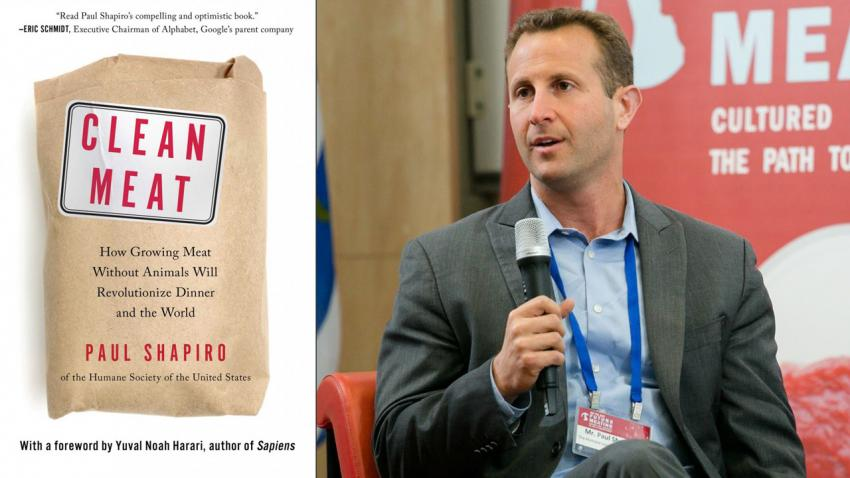

«Чистое мясо» — первая книга о том, как мясо, выращенное из клеток животных, изменит этот мир
автор публикации

Вадим Шевелинский
Что такое чистое мясо?
С рассвета Хомо Сапиенс около четверти миллиона лет назад, мясо животных укоренилось в желаниях нашего вида. Но с ростом населения и мирового спроса на продукты животного происхождения, увеличение такого огромного количества животных, выращиваемых для пищи, создает серьёзные проблемы.
Но что, если бы у нас была возможность есть мясо животных, не выращивая и не убивая их? В этом и заключается суть экологически чистого мяса. По аналогии с тем, как нам нужна чистая энергия, чтобы конкурировать с ископаемым топливом, чистое мясо готово стать конкурентом для промышленного животноводства. Экологически чистое мясо не является альтернативой обычному мясу; это реальное, фактическое мясо, выращенное из настоящих клеток животных, а также другие экологически чистые продукты животного происхождения, которые выращены из молекул, исключая клетки животных вообще.
В этой новаторской книге автор Пол Шапиро рассказывает бурную историю изобретателей и инвесторов, стремящихся коммерциализировать первые в мире реальные продукты животного происхождения, созданные без разведения и убийства животных.
Книга «Чистое мясо»
Великая научная революция идёт полным ходом в сторону открытия новых путей создания достаточного количества продовольствия для постоянно растущего, вечно голодающего населения мира.
Когда-то наши предки приручили диких животных и превратили их в скот, а сегодня мы начинаем приручать их клетки, вынося животных за рамки этого уравнения. И история, которую Пол Шапиро рассказывает об этом «втором одомашнивании» — ничто иное, как приручение на клеточном уровне.
Шапиро рассказывает о бурной гонке по созданию и коммерциализации более чистого, безопасного и экологически устойчивого мяса без участия животных. От предпринимательских провидцев до семинаров учёных в залах заседаний крупного бизнеса, автор детализирует поиск чистого мяса и других продуктов животного происхождения, рассматривая споры вокруг этой темы.
Отзывы о книге
"Пол Шапиро написал своевременную и содержательную книгу об увлекательном преобразовании, которое должно произойти в том, как мы производим наши продукты."
Питер Сингер - автор бестселлера «Освобождение животных» и специалист по этике в Принстоне
"Чистое мясо может стать огромной победой для благополучия животных, здоровья человека и планеты. Если вы хотите узнать больше об учёных, предпринимателях и активистах, которые ведут эту революцию, прочитайте привлекательную и оптимистичную книгу Пола Шапиро."
Эрик Шмидт - Председатель Совета директоров материнской компании Google, Alphabet
"Мясо, которое мы продаем в Whole Foods Market, оценивается по шкале благосостояния животных от 1 до 5+, но когда чистое мясо попадает на рынок, я хотел бы поместить его в наш раздел мяса с рейтингом благосостояния животных 10, так как это означает, что никто из животных не пострадал и не умер. Увлекательно читать аккаунт Пола Шапиро о предпринимателях, работающих над тем, чтобы дать нам возможность поскорее продавать это мясо."
Джон Макей - генеральный директор Whole Foods Market